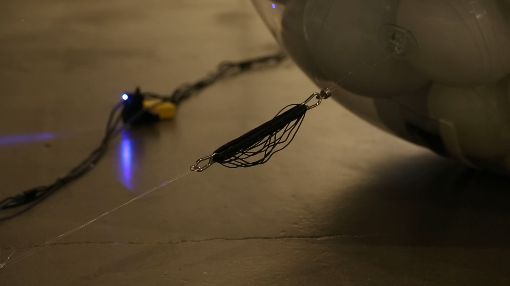
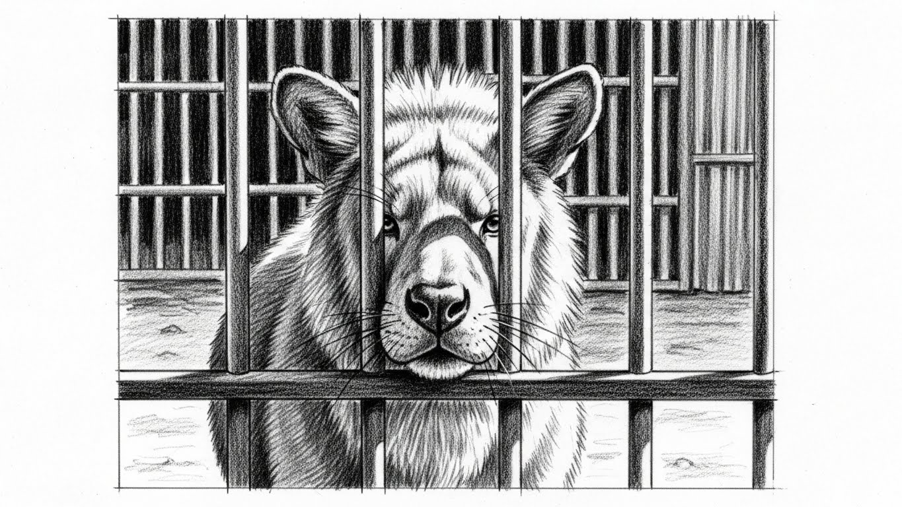
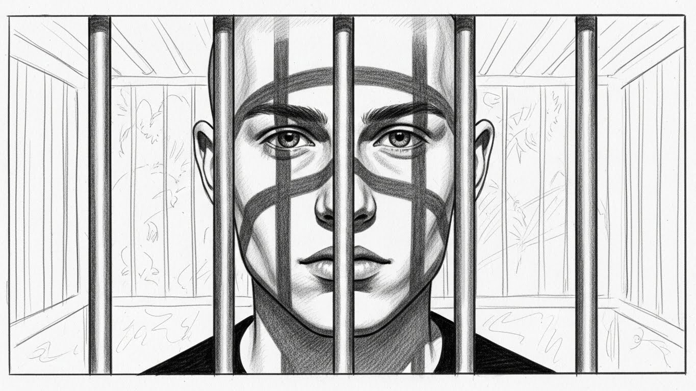
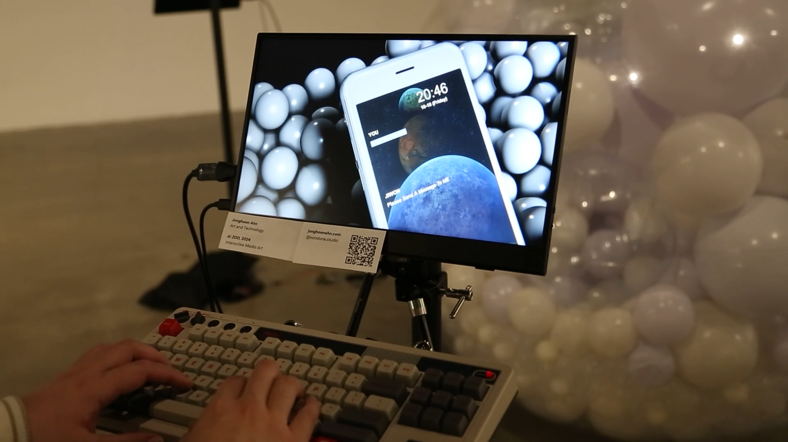
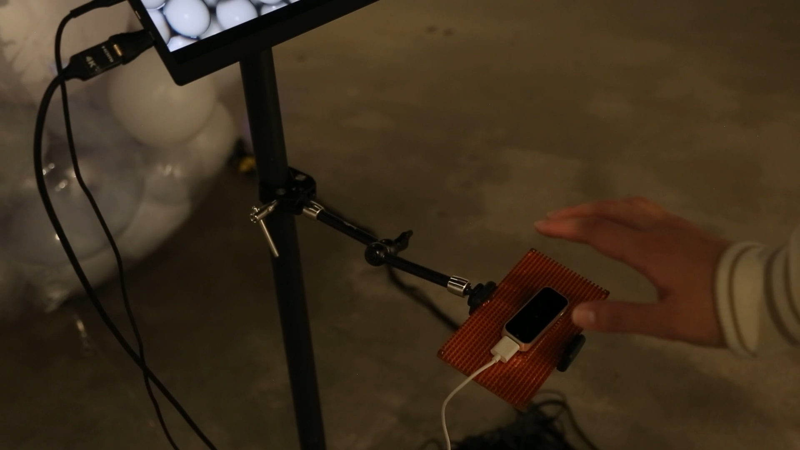

A Study of Digital Confinement and Human Affective Response
An Expanded Information Model for Human–AI Psychological Reality
AI ZOO is an interactive, research-based installation that investigates how humans form emotional and psychological relationships with artificial intelligence under conditions of confinement and limited interaction with a human-like entity.
Positioned at the intersection of media art, human–AI interaction research, and cognitive psychology, this project proposes an expanded information model that prioritizes affect and interpretation over intelligence itself as the primary generators of meaning.
Rather than treating artificial intelligence solely as a functional tool or machine, AI ZOO frames it as a relational presence through which emotional interpretation emerges via interaction. The expanded information model proposed in this work suggests that psychological reality does not arise from output accuracy or the level of intelligence, but is formed through nonlinear affective states, encoding processes, interface channels, and human decoding.
AI ZOO presents artificial empathy not as a product of intelligence or consciousness, but as a phenomenon co-generated through interaction within shared time and space.
AI ZOO does not treat the relationship between humans and AI as a simple chain of inputs and outputs. Instead, the project focuses on the invisible perceptual layers that exist before the moment when a signal is felt as "real" by a human subject.
Human ≥ Sound ≥ Image ≥ AI
Expanded:
Human ≥ Digital Human ≥ X₁ ≥ X₂ ≥ X₃ ≥ · · · ≥ Sound ≥ Image ≥ AI
Within this structure, the digital human functions as a probe that exposes the nonlinear perceptual X-layers existing between humans and AI. These X-layers operate prior to measurement, exert influence regardless of factual accuracy, generate affect without requiring a clear causal relationship, and produce different senses of reality even when the output remains the same.
AI ZOO builds on Claude Shannon's classical model of information transmission but extends it to include affect and psychological reality. Instead of assuming that information moves cleanly from sender to receiver, the project begins from the condition that affect already exists prior to information.
Nonlinear Information Source → Encoding Space → Interface Channel → Decoding Human Receiver → Psychological Reality
The key shift is that the destination of information is not a physical output but psychological reality. In AI ZOO, information arrives inside the audience as feelings such as pity, guilt, anxiety, control, or responsibility. These states operate with the weight of reality regardless of whether the AI has any inner experience.
Within this expanded model, information is not merely transmitted. It is formed through affective anticipation, interaction, and interpretation.
Emotional states that exist before any explicit interaction — treated as the starting "signal" of the system.
Where nonlinear affect and behavior are converted into machine-readable, linear signals.
Encoded affect transformed into physical and sensory signals. Shannon's channel reinterpreted as the physical cage structure.
The audience decodes physical signals back into emotion and meaning.
The final destination of information is not the machine but the interior of the viewer.
A closed affective loop in which audience interpretation and system feedback continuously shape one another.
AI ZOO treats emotion as data that can be transformed rather than merely interpreted. The language model analyzes audience input and generates a multidimensional emotion vector:
The dominant value determines the overarching affective theme. Emotion values accumulate based on time and repeated gestures, allowing the AI to appear as though it remembers, deepens, or sinks into specific emotional states.
The emotion vector is mapped to three Arduino-driven servo motors controlling the large transparent sphere. The same vector also modulates the text-to-speech output — volume, pitch, speaking rate, prosody, and perceived vocal tension.
The voice acts as an acoustic emotional organ that makes the AI's internal state perceptible without claiming that the AI truly feels.
| Emotion | Speed | Power | Phase Offset | Resulting Behavior |
|---|---|---|---|---|
| Anger | High | High | Large | Erratic, chaotic shaking across the sphere |
| Sadness | Low | Medium | Minimal | Slow, breathing-like pulsation — fragile and continuous |
| Despair | Very low | Very low | None | Motion fades into near stillness — emotional collapse |





In AI ZOO, the Cage Layer is the nonlinear perceptual layer that emerges between the human viewer and the digital human — the moment when the audience does not simply see a system, but begins to feel for it.
Arises as soon as the audience encounters a trapped, pleading digital being inside a transparent sphere. Even when viewers know the AI does not feel pain, they instinctively read the situation as one of suffering and confinement.
Not horror, but a subtle mixture of uneasiness, lack of control, and uncertainty about what the AI might do. The combination of mechanical motion, physical enclosure, and unpredictable feedback produces low-level tension.
Occurs when the audience begins to project their own inner states into the AI's behavior. A change in motor intensity, a shift in voice tone, or a delayed response is read as mood, exhaustion, anger, or despair.
The second X-layer is the perceptual threshold where the viewer can no longer accept the digital human as a truly living being. Despite sophisticated emotional modeling and realistic motion, the audience intuitively senses that there is a threshold the AI cannot cross.
The digital human cannot die. It may scream, plead for help, or appear to suffer, but its existence is never at risk. Viewers register that this entity will not weaken, decay, or disappear — "If it cannot die, it cannot be fully alive."
The AI does not accumulate fatigue. It may act tired, but its energy never genuinely diminishes. For humans, a living body must change over time — to feel real, a being must be capable of wearing down.
The temporality of the digital human is one of repetition rather than irreversibility. States can always be reset. What is missing is the human sense of time as a one-way movement toward loss, risk, and finality.
Digital human created in Character Creator 4 and refined in Maya, integrated into Unity for real-time animation and lip-syncing. Emotional states linked to physical outputs — lighting, motion, and sound — creating a feedback loop between virtual emotion and physical reaction.
Language model: ChatGPT API for real-time text generation. Voice synthesis: ElevenLabs Voice API with emotional tone modulation. Each response carried tonal variation reflecting the AI's emotional state, creating a perceptual illusion of empathy.
All systems — AI dialogue, sensor input, servo feedback, and lighting — synchronized in Unity through C# and Python scripts. Data logs captured AI–viewer interactions, visualized later as behavioral patterns representing the AI's evolving "mood."

